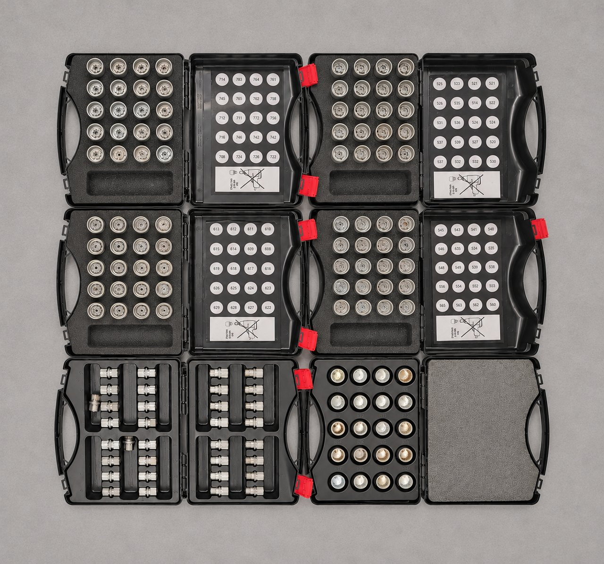

Thay và bán lốp xe ô tô của bạn

Khu vực lắp lốp tại J&S SERVIS.
J&S servis ở Statenice cung cấp dịch vụ lốp xe tiên tiến về công nghệ tập trung vào việc gắn lốp xe nhẹ nhàng, cân bằng bánh xe chính xác, chẩn đoán các bất thường của chúng và kiểm tra hệ thống TPMS. Chúng tôi sử dụng thiết bị chuyên dụng cho xe hành khách, thể thao và hiệu suất.
- Máy ra vào lốp tự động VAS 6616
- Cân bằng chẩn đoán Beissbarth MT ZERO 8
- Chẩn đoán TPMS bằng thiết bị Continental và rửa bánh xe
Máy ra vào lốp tự động – VAS 6616
Máy ra vào lốp tự động chuyên nghiệp VAS 6616 (monty quadriga) sử dụng chức năng quét laser biên dạng vành và các dụng cụ lắp ráp được điều khiển tự động. Thiết bị cho phép lắp và tháo lốp nhẹ nhàng, giảm thiểu nguy cơ làm hỏng mâm xe và mép lốp.
Công nghệ này cũng phù hợp với những yêu cầu về lốp UHP cấu hình thấp và lốp run-flat.
Máy cân bằng bánh xe có chức năng chẩn đoán – Beissbarth MT ZERO 8
Máy cân bằng bánh xe có chức năng chẩn đoán hiện đại cho phép cân bằng bánh xe chính xác và kiểm tra các bất thường về hình học của lốp và mâm xe theo các chức năng sẵn có của thiết bị.
Nó giúp xác định nguyên nhân của rung động có thể tồn tại ngay cả sau khi cân bằng thường xuyên.
Một phần của quy trình chuyên nghiệp cũng có thể là tối ưu hóa vị trí tương đối của lốp và mâm xe để giảm độ đảo tổng thể của bánh xe.
Bộ đầu mở bu lông chống trộm bánh xe VW Group
Bu lông chống trộm bánh xe: sử dụng đúng cách
Bu lông chống trộm bánh xe phải được nới lỏng bằng dụng cụ cầm tay và siết bằng cờ lê lực đến mô-men siết do nhà sản xuất quy định cho đúng xe, bánh xe và loại bu lông được sử dụng.
Trong cả hai thao tác, đầu mở bu lông chống trộm – đầu chuyển chuyên dụng – phải đúng loại, được lắp đúng và ăn khớp hoàn toàn. Khi thay bánh xe thông thường, không sử dụng súng siết bu lông: lực va đập có thể làm hỏng biên dạng ăn khớp của bu lông hoặc đầu mở, gây khó khăn cho lần tháo bánh tiếp theo.
Đầu mở bu lông chống trộm phải được trả lại trong xe
Thường xuyên kiểm tra xem đầu mở đúng loại, không bị hư hỏng có còn trong xe hay không. Cất đầu mở ở một vị trí cố định, dễ lấy, cùng với bộ dụng cụ theo xe.
Sau khi thay lốp hoặc thực hiện công việc khác với bánh xe, xưởng phải trả lại đầu mở cho khách hàng. Khi nhận xe, hãy luôn kiểm tra việc hoàn trả này. Đầu mở bị thiếu hoặc hư hỏng có thể khiến việc thay bánh thông thường khi thủng lốp không thực hiện được và gây khó khăn đáng kể cho cứu hộ trên đường.
Đừng quên bánh xe dự phòng
Nếu xe có bánh dự phòng hoặc bánh dự phòng tạm thời, hãy thường xuyên kiểm tra tình trạng và áp suất lốp của bánh đó, đặc biệt trước chuyến đi dài. Tuân thủ các giá trị và giới hạn do nhà sản xuất xe và bánh dự phòng tạm thời quy định. Đồng thời kiểm tra sự hiện diện của các dụng cụ cần thiết, bao gồm đầu mở bu lông chống trộm.

Kiểm tra độ siết sau khoảng 50 km
Sau khi thay lốp hoặc bánh xe, chúng tôi khuyến nghị đưa xe đến xưởng để kiểm tra độ siết của tất cả bu lông bánh xe sau khi đi khoảng 50 km. Nếu nhà sản xuất xe, bánh xe hoặc bu lông chống trộm có hướng dẫn khác, phải ưu tiên tuân thủ hướng dẫn đó.
Việc kiểm tra được thực hiện bằng cờ lê lực; nếu cần siết lại, chỉ siết đến giá trị quy định. Mục đích là bảo đảm bánh xe được lắp đúng, không phải tiếp tục siết với lực lớn hơn.
Có nên bôi trơn bu lông bánh xe không?
Nước, muối rải đường và sự ăn mòn có thể khiến việc tháo bu lông về sau khó khăn hơn. Tuy nhiên, cách xử lý bu lông phải theo hướng dẫn lắp ráp của nhà sản xuất.
Bôi trơn làm thay đổi ma sát trong mối ghép bu lông. Với cùng mô-men siết, bu lông được bôi trơn có thể tạo ra lực căng ban đầu và lực kẹp lớn hơn. Sử dụng chất bôi trơn không phù hợp vì vậy có thể gây quá tải cho bu lông, ren trong moay-ơ và bề mặt tựa của bu lông trên vành xe.
Nếu nhà sản xuất yêu cầu lắp không bôi trơn, các ren và bề mặt tựa liên quan phải sạch, không dính dầu hoặc mỡ. Chỉ được dùng sản phẩm hỗ trợ lắp ráp khi có chỉ dẫn rõ ràng về loại sản phẩm, vị trí sử dụng và phương pháp siết. Không được tự ý thay đổi mô-men siết theo phỏng đoán.
Phải thay bu lông bị hư hỏng hoặc ăn mòn nặng. Chỉ cài đặt đúng giá trị trên cờ lê lực không bảo đảm lực căng ban đầu đúng nếu tình trạng mối ghép không đáp ứng hướng dẫn lắp ráp.
Chẩn đoán TPMS / RKA / RDK – Continental
Tại J&S SERVIS, chúng tôi thực hiện chẩn đoán hệ thống kiểm soát áp suất lốp của các xe thuộc Tập đoàn Volkswagen. Chúng tôi sử dụng thiết bị Continental chuyên nghiệp và chẩn đoán ODIS.
Hệ thống RDK trực tiếp sử dụng cảm biến điện tử trong mỗi bánh xe. Chúng tôi kiểm tra hoạt động, giao tiếp và tình trạng hệ thống của chúng. Tùy thuộc vào xe, chúng tôi cũng lập trình các cảm biến thay thế tương thích và gán cho xe.
Hệ thống RKA và RKA+ gián tiếp đánh giá những thay đổi trong hoạt động của bánh xe bằng cách sử dụng dữ liệu ABS/ESC. Chúng tôi tiến hành chẩn đoán lỗi và khởi tạo cần thiết theo quy trình của nhà sản xuất.
Khi thay lốp hoặc bánh xe hoàn chỉnh, chúng tôi sẽ kiểm tra hoạt động của hệ thống theo yêu cầu và điều tra mọi thông báo lỗi. Công việc luôn phản ánh chiếc xe và thiết bị của nó.

Máy rửa bánh xe chuyên nghiệp - Wulkan
Máy rửa Wulkan chuyên dụng cho phép làm sạch hoàn toàn mâm xe và lốp trước khi cân bằng chẩn đoán.
Việc loại bỏ tạp chất góp phần nâng cao độ tin cậy của phép đo và chất lượng cân bằng bánh xe đạt được.
Chăm sóc xe thể thao và xe hiệu suất cao
Thiết bị công nghệ của chúng tôi cho phép làm việc chuyên nghiệp và cẩn thận ngay cả với những bánh xe đòi hỏi cao của xe thể thao và xe hiệu suất cao, ví dụ như Porsche, Audi RS và các xe cao cấp khác, trong các tham số kỹ thuật của thiết bị.
Chúng tôi cung cấp dịch vụ lốp xe cho xe Volkswagen, Audi, Škoda, SEAT, CUPRA, Porsche và các thương hiệu khác.
Dịch vụ lốp xe hoàn thiện với mức giá minh bạch
Giá của việc tháo lắp lốp trọn gói cho bốn bánh theo tiêu chuẩn bao gồm việc tháo và lắp lại các bánh xe vào xe, lắp lốp, cân bằng tiêu chuẩn bao gồm chì cân bằng đã sử dụng và rửa bánh xe bằng máy.
Chẩn đoán độ đảo chuyên sâu, tối ưu hóa bánh xe, lập trình cảm biến TPMS và các hoạt động vượt quá tiêu chuẩn khác được tính riêng theo phạm vi công việc được thực hiện.
Việc bán lốp xe cho xe hơi và xe thương mại
Sau khi đặt hàng qua điện thoại, chúng tôi có thể cung cấp các loại lốp thuộc nhiều chủng loại và thương hiệu theo nhu cầu. Sau đó, chúng tôi sẽ lắp lốp và cân bằng bánh xe cho bạn tại xưởng dịch vụ lốp của chúng tôi.
Trước khi đặt lịch
Khi đặt lịch, vui lòng cho biết kích thước bánh, bạn mang bánh đã lắp lốp hoàn chỉnh hay lốp cần lắp lên mâm, và thông báo TPMS nếu có. Nếu chỉ thay cả bộ bánh hoàn chỉnh, hãy xác nhận phạm vi và giá tương ứng; bảng giá tháo lắp lốp bao gồm các công việc khác.